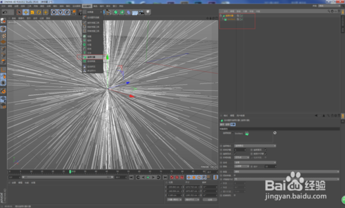
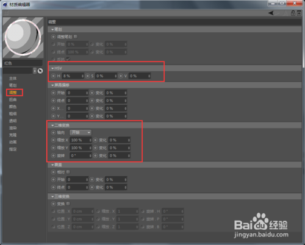
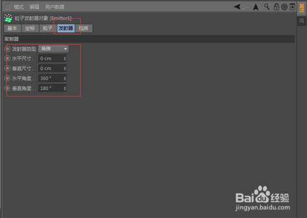
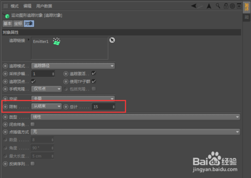
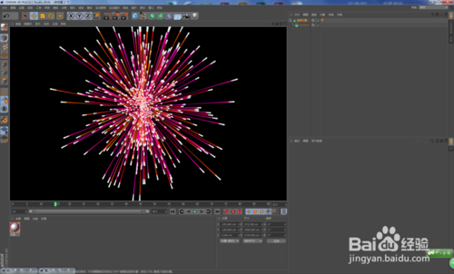

C4D粒子特效
Tip1:新建一个粒子发射器（在模拟里面），然后对其调整参数（参数的调整很简单，具体的可以看截图），播放观察效果。



Tip2:然后，添加追踪对象，并作为发射器的父物体来使用，然后调整追踪对象里面的参数（具体的可以看截图调整），播放观察效果！

Tip3:其实，到第二步的时候，这个效果已经完成了，但是渲染是没有效果的，接下来为追踪对象添加素描样式标签（即使用素描样式的材质来表现烟花的效果，当然你也可以使用毛发材质来做调整，也可以得到不错的效果）
Tip4:这时在左下角的材质窗口中会出现一个素描的材质球，然后对其参数进行细致的调整，具体的可以看截图（参数的调整仅供参考）。

Tip5:然后，渲染场景可以看到已经有效果了，但是背景是白色的看不清效果，接下来就可以到渲染设置中做调整了，先调整成黑色以便能观察出效果（要是不用背景的话，最终可以渲染出带有透明通道的文件，然后再到合成软件中做进一步的处理）。